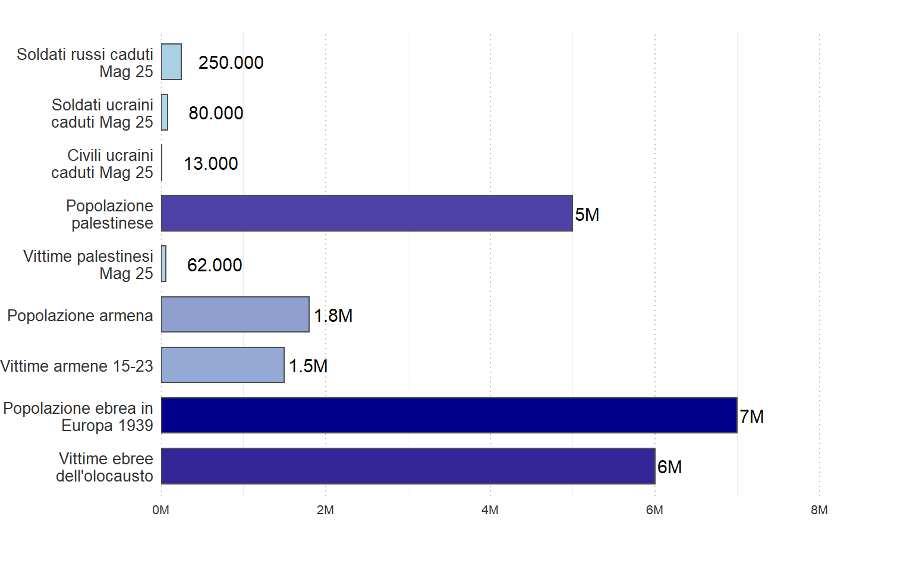

Statistiche Sociali e Geopolitiche
Vittime in contesti di conflitto
Il grafico presenta un confronto quantitativo immediato di diverse categorie, mescolando dati relativi alle vittime in contesti di conflitto recenti e storici con la dimensione delle popolazioni coinvolte.

Vittime (civili e militari) in una serie di conflitti e genocidi storici
Il grafico presenta una comparazione quantitativa delle stime delle vittime (civili e militari) in una serie di conflitti e genocidi storici e contemporanei, evidenziando le estreme differenze di scala che caratterizzano la violenza umana.
Donne che hanno subito violenza fisica da un partner intimo
Dati Eurostat ANNO 2021
Economia Italiana Anno 2024
Il grafico mette a confronto i principali indicatori economici relativi agli Stati Uniti e all’Italia, includendo le esportazioni totali negli USA, le esportazioni complessive italiane, il prodotto interno lordo italiano, le importazioni totali e gli investimenti.
Questa rappresentazione aiuta a comprendere le dimensioni relative di queste grandezze economiche e il ruolo fondamentale delle esportazioni e degli investimenti nello sviluppo economico.
Tendenze dei Matrimoni in Italia
Esplora le profonde trasformazioni sociali che hanno interessato l’Italia attraverso l’analisi dei dati sui matrimoni. Questo grafico illustra il costante declino del numero di unioni, partendo dalle medie del dopoguerra (1946-1970) fino al dato del 2023. Una rappresentazione chiara che evidenzia i cambiamenti demografici, culturali ed economici che stanno ridefinendo la struttura della famiglia e delle relazioni nel nostro paese.